ポポーの花が咲きました。
更新日 : 2021/04/10
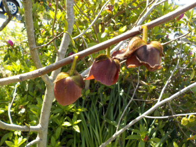
今年は実生のポポーの木3本に花がつきました。
去年は1本だけで実が少なかったですが、今年は沢山出来そう。
ポポーは自家受粉だと実が少ないって書いてあるホームページがありますが、実生は遺伝子が違うので受粉の確率が上がるんじゃないかと期待しています。
3本それぞれ違う味で違う大きさのポポーが出来ると面白いです。
更新日 : 2021/04/10

今年は実生のポポーの木3本に花がつきました。
去年は1本だけで実が少なかったですが、今年は沢山出来そう。
ポポーは自家受粉だと実が少ないって書いてあるホームページがありますが、実生は遺伝子が違うので受粉の確率が上がるんじゃないかと期待しています。
3本それぞれ違う味で違う大きさのポポーが出来ると面白いです。
更新日 : 2021/07/03
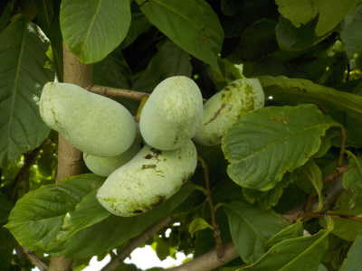
一か所からポポーの実が沢山出来ています。
間引いたほうが良かったのかな？
大きい実の方が多分食べやすいですよね。でも大きい実は重みで台風とかで落ちそうな気もするな。
ポポーの木の周りは、なんとなく甘い香りがしていました。今年は実が出来るのが早いかも。
更新日 : 2021/08/21
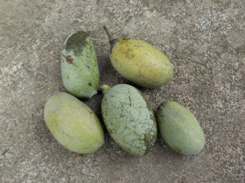
台風とか豪雨があったせいか、ポポーの実が落ちてました。
ちょっと黄色っぽいのは甘い匂いがしました。でもまだ食べれないんだろうな。
9月になったら食べれるかな？なってみないと分からないですね。
2021/09/19
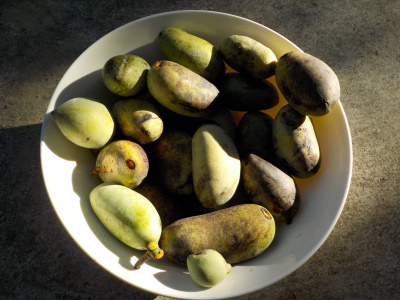
熟れて落下したポポーを拾いました。これだけ採れたら十分かな。（まだ木にもあります。）
種を蒔いて育てて良かったです。
更新日 : 2021/09/26
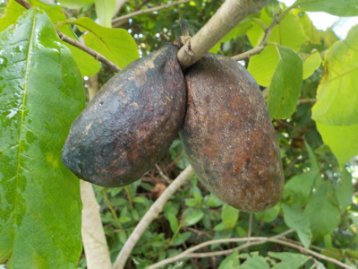
ポポーは熟れたら実が落下するんですが、落下しないで萎れたものがありました。
こんなのもあるんですね。
ちょっと触るながいやなので、このまま放置します。種が落ちで芽がでそうだな。
更新日 : 2021/10/03
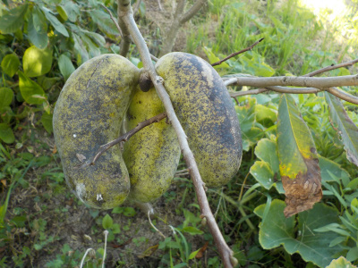
ポポーの収穫がほぼ終わりました。これは最後に残った3個です。
触ってみたところ、まだ硬かったです。
収獲し忘れないようにしたいですが、3個なので忘れてもいいかな。
更新日 : 2022/04/10
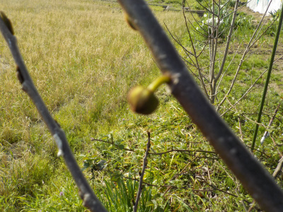
このポポーは根っこを切って植替えしたので、成長が遅かったです。
今年は5本の木に花が付いてるので、たぶん沢山実が出来るでしょう。
更新日 : 2022/05/29
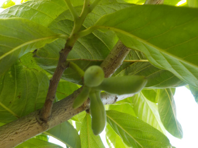
木が何本もあるので、きっと虫が沢山寄ってきて受粉してくれるだろうと思っていたんですが、そう都合よくいかなかったみたいです。
実が出来ているか探したところ、あまり出来ていませんでした。来年は受粉作業をしようと思います。
更新日 : 2022/07/10
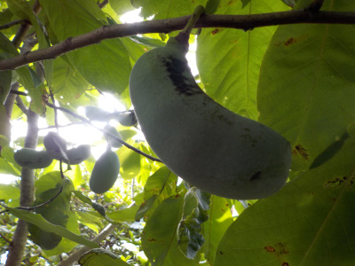
草刈りしてたらポポーの実を見つけました。
順調に育ってます。
更新日 : 2022/09/08
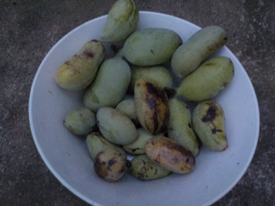
一昨日の台風ので実が落ちていました。全部で18個もありました。
熟れてるのは食べれるのいいですが、青くて固いのがどうなるかなー。
追熟するといいんですが。
更新日 : 2022/09/13
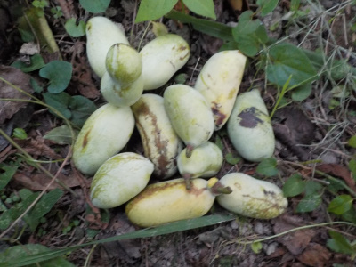
前回の収獲から5日後で12個収獲出来ました。
今回は自然落下したものなので、今年は今ぐらいが収獲時期になりますね。
今後はこまめに木の下を見て収獲しようと思います。
更新日 : 2022/09/18
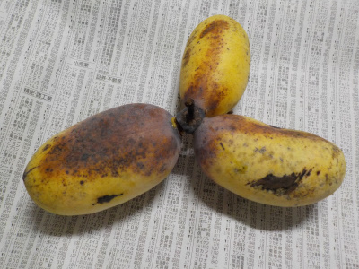
台風で落ちた青いホホーが10日経って黄色くなりました。
見た目が食べごろになったので食べましたが、ところどころ固かったです。
固いところは甘くなかったです。自然落下したのを食べるのが一番いいですね。
2022/10/02
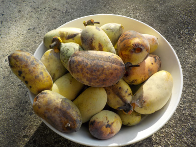
今日も沢山拾いました。
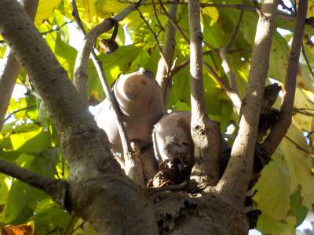
ポポーは木から落ちたものを拾っていたんですが、木の枝に引っかかっているものがありました。
こんなこともあるんですね。
他にもないかと見たところ、木に付いたまま充分に熟れた実があったので何個か収穫しました。
木から落ちるのを待つ必要ないですね。木から落ちるのって熟れ過ぎたものが多いので、来年からは落ちる前に収穫しようと思います。
ポポー食べ放題です。